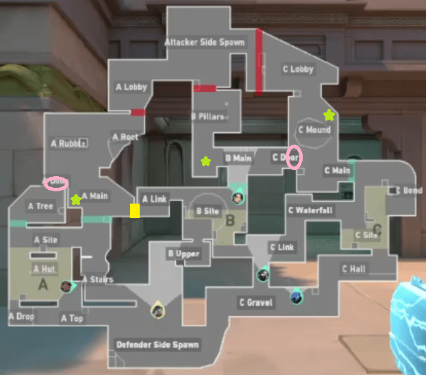
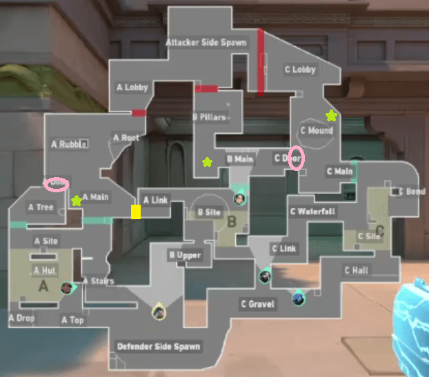

Vítej na mapě Lotus! Zde jsou základní informace o mapě
Mapa Lotus se nachází v pralesním komplexu, který přináší nádhernou atmosféru svojí flórou. Lotus je dosud nejnovější mapa co byla přidána do hry Valorant, ale už i tak získává neskutečně mnoho negativních názorů kvůli chaotickým začátkům kol. Naopak kladné komentáře sbírá detailním designem outdooru i indooru a nádhernou atmosférou. Mapa je unikátní tím, že je o něco větší než ostatní mapy a obsahuje 3 bomb plant spoty A, B, C. Mapa se také liší novými dveřmi které se nedají rozbít a otáčí se kolem dokola.
 
